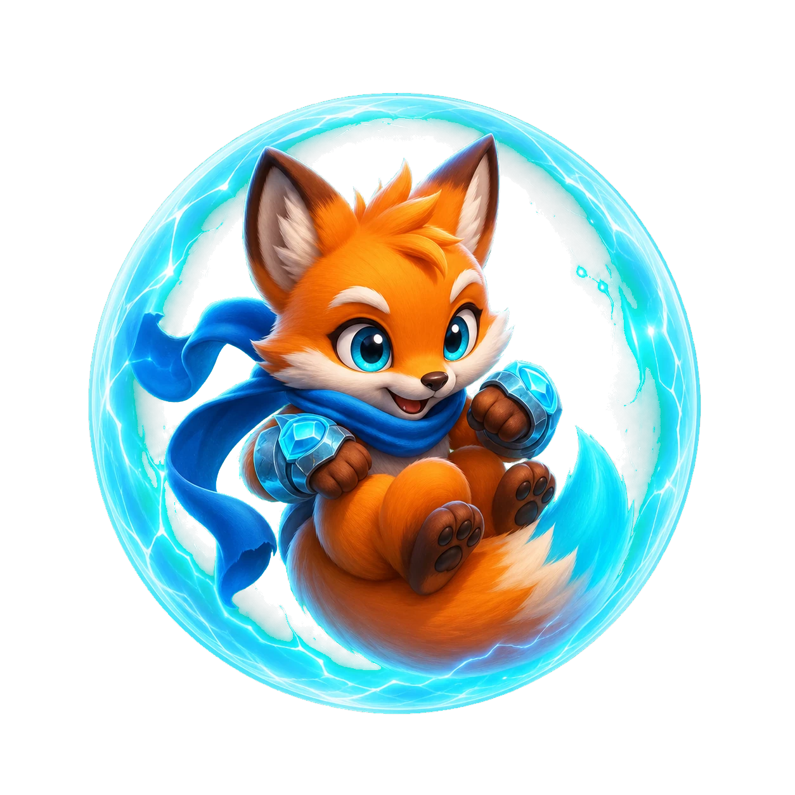
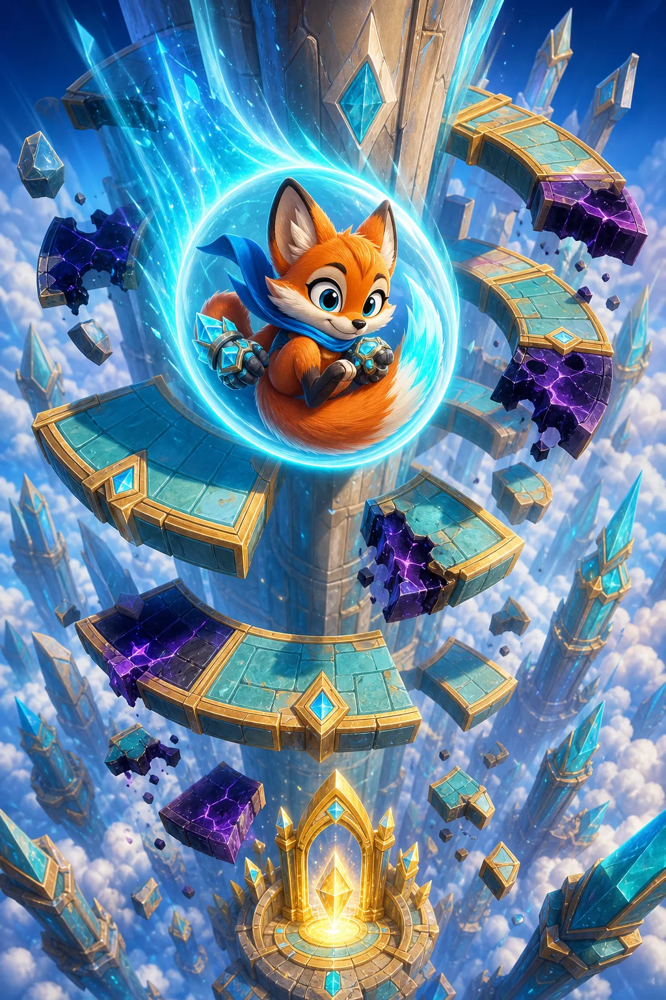

How to play
- Drag across the tower or use Left and Right to rotate the rings.
- Place an opening beneath Fia before her next landing.
- Fall through consecutive rings to charge Comet Break and smash one danger.

Opening the skyspire…
Rotate the tower, line up each opening, and charge Fia's comet fall before the cursed rings stop her.
0 / 30Fia is sealed inside a protective comet sphere while descending thirty unstable skyspires. Drag left or right to rotate every ring. Pass through openings, bounce on safe turquoise stone, and avoid violet cursed sectors.
Six chapters introduce fragile glass, drifting rings, reversed controls, charge crystals, shield gates, and Crownfall towers that combine every rule.
A short safe bounce creates time to rotate. Long falls build power, but the next platform arrives faster. Decide when to aim for a gap and when to land deliberately.
Stars, best times, shards, and upgrades stay in this browser. No login or personal information is required.
Drag the rail and choose an unlocked tower.
Spend saved sky shards on permanent control and survival upgrades.
A violet-gold trail cosmetic. It does not change tower balance.
Rotate the tower and reach the rescue gate.
Continue returns to the exact bounce. Returning to the map ends this run.